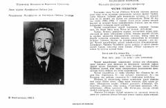

CGTaniqli shoir Chustiyning saralangan g'azallari va she'riy merosidan iborat to'plam.
Mazkur to'plam mashhur o'zbek shoiri va mutafakkiri Chustiyning hayoti va ijodiga bag'ishlangan bo'lib, uning sara g'azallari hamda she'riy namunalarini o'z ichiga oladi. Kitobda shoirning adabiy merosi, g'azaliyotining asosiy g'oyaviy-estetik yo'nalishlari va poetik mahorati haqida ilmiy-adabiy tahlillar berilgan.